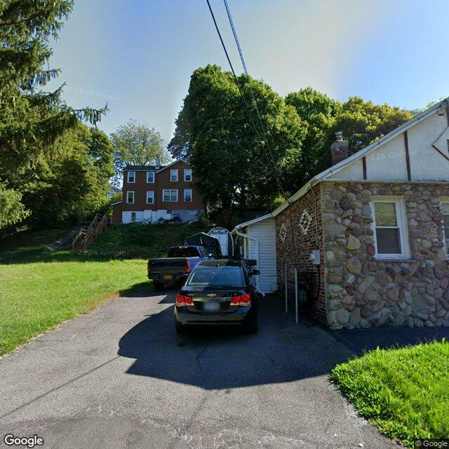

Property entry
106 Gannett Ave & Stedman St
Published 2026-06-17T01:07:43+00:00
Parcel key: 003-08-040

Overgrown grass · medium Minor debris/storage · mediumAI image read
The visible exterior of the property appears to be a single-family residence with stone veneer siding, a paved driveway, and some areas of minor vegetation overgrowth.
Property type guess: single_family
Visible conditions
- The main structure features stone veneer on its exterior walls, with some brick accents and a lighter-colored gable end.
- A paved driveway is present, leading towards the side of the house.
- Grass areas are visible on the lot, with some sections appearing somewhat overgrown.
- A small, white, shed-like structure is situated adjacent to the main building.
- Some miscellaneous items, partially covered by a white tarp, are visible near the shed structure.
- The roof, where visible, appears to have asphalt shingles.
- Windows visible on the side of the house appear intact, with one screen visible.
Condition scores
- Roof
- fair
- Siding Or Facade
- good
- Windows Doors
- good
- Porch Or Entry
- not_visible
- Yard Or Lot
- fair
- Trash Debris
- minor
- Vegetation Overgrowth
- minor
Visible flags
- Boarded Windows Or Doors
- no
- Fire Damage Visible
- no
- Structural Damage Visible
- no
- Vacancy Signs Visible
- no
- Active Construction Visible
- no
Possible image-only flags
- Minor vegetation overgrowth is visible in some grass areas of the yard.
- A minor accumulation of items or debris is visible near a side structure.
AI review boxes
- Overgrown grass: Grass on the right side of the driveway appears somewhat overgrown.
- Minor debris/storage: Miscellaneous items, some covered by a tarp, are visible near the white shed/side of the house.
Review reasons
- Possible image-only issue
Image quality
- Available
- True
- Bytes
- 97657
- Needs Rerun
- False
['The image provides a street-level view, and some parts of the property, such as the full roof or rear, are not visible.', 'A multi-story building visible in the background on a hill is likely a separate parcel and not the target property.']
ACS tract context
Census Tract 2; Onondaga County; New York
- Total population
- 3511
- Median household income
- 51848
- Poverty rate
- 28.1
- Housing units
- 1686
- Vacancy rate
- 14.7
- Renter-occupied share
- 50.1
- Median gross rent
- 146700
OpenStreetMap nearby
60 meter search radius
Summary
- 12 mapped building footprints
Vacant properties 0
No matching records found in this feed.
Rental registry 0
No matching records found in this feed.
Code violations 0
No matching records found in this feed.
Unfit properties 0
No matching records found in this feed.